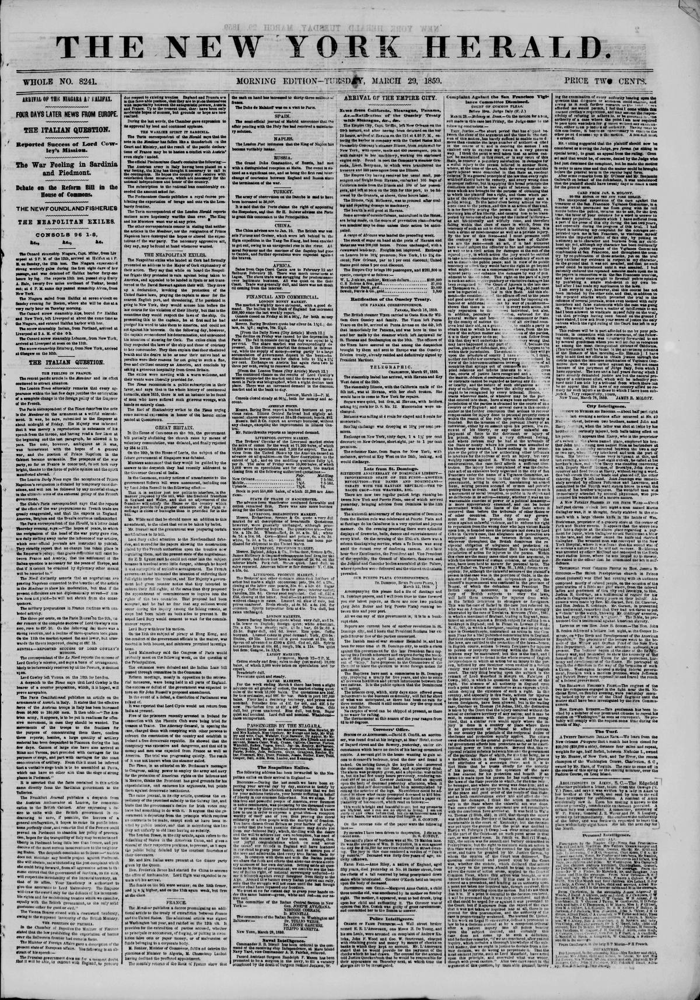

Late from St. Domingo. SIXTEENTH ANNIVERSARY OF DOMINICAN LIBERTY—IMPOVERISHED STATE OF THE FUNDS—ANOTHER REVOLUTION—THE DANES AND DOMINICANS—TREATY WITH THE HAITIEN REPUBLIC—THE TOBACCO CROP—THE WEATHER, ETC.
https://www.loc.gov/resource/sn83030313/1859-03-29/ed-1/?sp=1

See the original pageVer la página original
There are now two regular packet brigs running between New York and Puerto Plata, one of which arrived yesterday, bringing advices from Dominica to the 12th instant.
The sixteenth anniversary of the separation of Dominica from the Haitien rule was celebrated at Puerto Plata and at Santiago de los Caballeros in a very spirited and joyous manner. On the evening preceding there were splendid displays of fireworks, balls, dances and entertainments of every kind. On the morning of the 27th ult. there was a solemn thanksgiving service, when a Te Deum was sung amid the distant roar of deafening cannon. At a later hour their Excellencies, the President and Vice President of the republic, the Council of Ministers, Senators and the Judicial and Consular bodies assembled at the Palace, where speeches were delivered and the utmost enthusiasm prevailed.
OUR PUERTO PLATA CORRESPONDENCE.
ST. DOMINGO, RIVER PUERTO PLATA, March 12, 1859.
Accompanying this please find a file of Santiago and St. Domingo papers, and I will from time to time forward you our latest papers, as there are now two packets (the New York and brig Puerto Plata) running between this and your port.
I can say of this government, it is in a bankrupt state.
Reports are current here of another revolution in St. Domingo city, and I learn that President Santana has expelled four or five of the parties concerned.
Mr. Lassen, Danish and Swedish Consul at, and has been for some time at St. Domingo city, to settle a claim for the destruction of the Danish schooner Ida (capturing two Danish schooners and cargoes during the blockade of this place in April last, and for other losses incurred at that time), have proposed to the Commodore of the Danish fleet to leave the question to some foreign nation or will arbitrate.
The Haitiens have sent a commission to St. Domingo city to treat for peace for ten years, and also to settle all previous hostilities and territory, and apparently for a final peace. It is the public opinion that the Dominicans will accept.
The tobacco crop, which was expected to be one of the inducements to the business community, will fall far short of what was anticipated, on account of the drought for three months. Should it still continue the crop must be a total failure.
No cargos of wood can be shipped at present, as there is no water for rafting.
The thermometer at this season of the year ranges from 84 to 89 degrees.
Dateline as printedLugar y fecha según el original
ST. DOMINGO, RIVER PUERTO PLATA, March 12, 1859.
From the original pageDe la página original
The passage where this article was found on the page, copied from the newspaper itself, reading errors and all.El pasaje donde se encontró este artículo en la página, copiado del propio periódico, con sus errores de lectura y todo.
amid the distant ro-.r of deafening cannon. At a later
hour heir Excellencies, tho PresiJsot an l Vice President
of the republic, tfce Council of Mini?ter3, 8eua'<,r? and
tlic Judicial and Consular bodies assembled at ti>? Pa!.ic?,
where ppeeches were delivered and the uUn-nteniliuslMui
[irndM.
Ol'R PITRTO PLATA CORRRSPONDSNCK.
St. Domingo, River Pr-jitTO Pmta.
March 12, I860, j
Accompanying this please Qud a Uto of Santiago and
Ft. 1 omlngo papers, and T will trom time to time forward
you our latest pap< rp, as thi re aro now two pickets
(brip John Butler and brig Puerto Plata) rnnn ng betvnea
tills and your port.
All we can say of this government is, it Is tn a bankrupt
t tile.
Kcpor's are current here of nnotber revolution in St.
Domingo city, and I Icaru that President Santana has expelle!
four or live of the parties concerned.
lbe banish man of.war steamer HeimJal is, and baa
been for some timo at Pt Domingo oitv, to soitlo a cla'm
cpainst this povernm< nt for the late President Ra< z cap
lur -:>(C J i ni.iai. nuoiuni m il f"ru u ill .UK HID un
ttdu ot tfciH place in prll lant, and iho Oomm.c^na being
out i f ''ssiip," bavo proponec. to tUo CommoJoro of the
I!p !i 111 10 leave tbe question to some foreign nation for
tctt.ewent.
Ttio Hay tiers bare sent a commission to St. Itorainffo
city, propping a treaty for live years, and also to sottle
a'l previous bof tlliliea and i ertnlt intercourse between the
two nations. It is the public opinion that the Dominicans
will accept.
Tbe tobacco crop, wblch, sixty days since offered proat
How to cite this articleCómo citar este artículo
The New York Herald. (1859). New York [N.Y.], March 29, 185929 de marzo de 1859. DR in the American PressRD en la Prensa Norteamericana. Library of Congress, Chronicling America: https://www.loc.gov/resource/sn83030313/1859-03-29/ed-1/?sp=1
ReferencesReferencias
Library of Congress, Chronicling America: The New York Herald, March 29, 185929 de marzo de 1859.
Send an observationEnviar una observación
Does this article connect with your family, your town, or something you know? Did we get something wrong? Write to us. Observations go to the editor's inbox and are read by a person.¿Este artículo conecta con su familia, su pueblo o algo que usted conoce? ¿Nos equivocamos en algo? Escríbanos. Las observaciones llegan al buzón del editor y las lee una persona.
Send observationEnviar observación